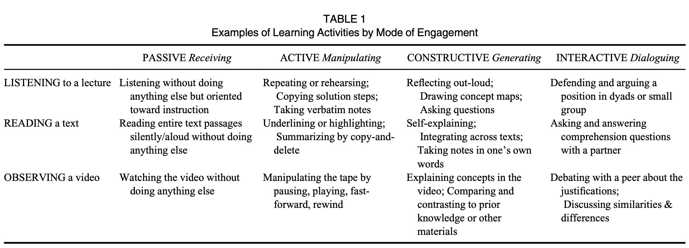

The ICAP framework
The ICAP framework: Linking cognitive engagement to active learning outcomes
Chi, M. T. H. & Wylie, R. (2014). Educational Psychologist, 49(4), 219--243.
What it says
- The article proposes a framework for understanding the effectiveness of what is commonly called "active learning". It does this by starting from the overt behaviors of students and placing those behaviors along a continuum from passive, i.e., least cognitively engaged, through to active, constructive, and finally interactive, i.e., most cognitively engaged. See the table below for some examples.
- After defining these categories of cognitive engagement, Chi and Wylie describe the ways that learning might occur under each mode of engagement. From this line of reasoning, they come to what they call the ICAP hypothesis, which states that learning through interactive engagement will surpass that of constructive, constructive > active, and active > passive.
- Finally, Section 2 of the paper summarizes both the authors' own research and that of others, all of which is consistent with the ICAP hypothesis.

The authors give examples of how students might engage at different ICAP levels with the same learning material. From the ICAP hypothesis (I>C>A>P), we would expect students to learn more and more deeply with these materials under the higher ICAP levels (Table 1 from Chi & Wylie).
What we might learn from it
- A key benefit of this approach over the way that active learning is often discussed is that the focus on overt behaviors and the more fine-grained nature of ICAP make this more actionable for instructors. Instead of the impression of a binary decision between implementing active learning or not, ICAP provides a heuristic through which any instructional approach can be evaluated.
- ICAP could also have value for students directly, particularly in the context of instruction that focuses on meta-cognition and learning strategies. For example, explaining the difference between passively reading a text, reading with highlighting, reading while making notes in one's own words, and reading followed by a peer-discussion about the meaning of the passage could be made into a more general lesson by naming these passive, active, constructive, and interactive and by encouraging students to reflect on their own learning strategies through this lens.